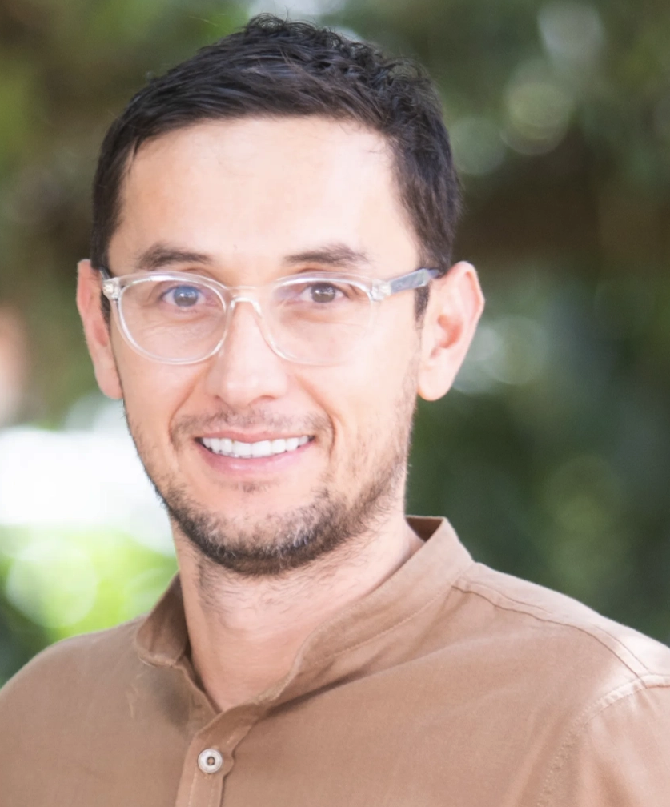
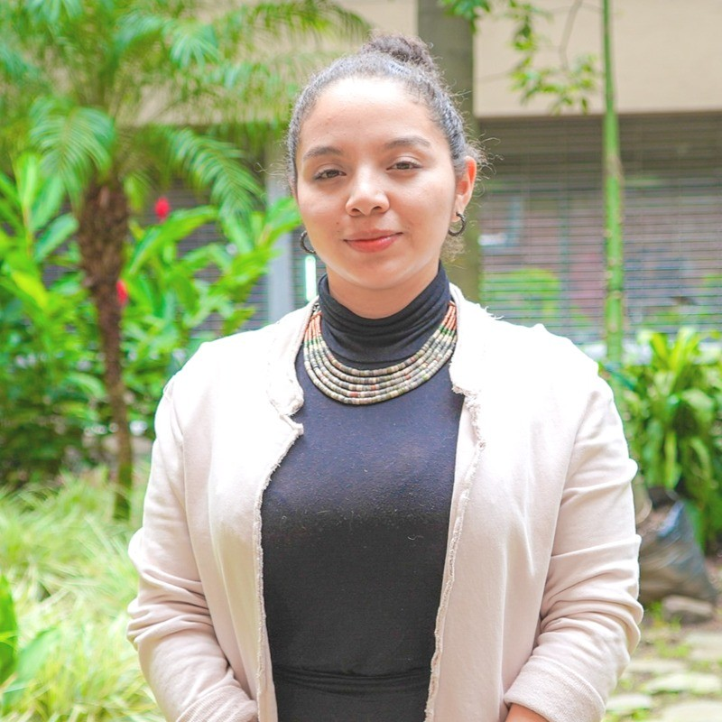

Equipo
Nuestro equipo
Cinco profesionales que combinan investigacion academica de frontera, experiencia en evaluacion de impacto social y dominio de inteligencia artificial. No es un equipo nuevo — es el equipo que ya lo hizo.
El equipo CVP integra cinco frentes funcionales: liderazgo estrategico y certificacion SVI, coordinacion y evaluacion cuantitativa, investigacion cualitativa y relacionamiento comunitario, analitica de datos e inferencia causal, y desarrollo de IA y plataformas digitales. Varios de sus miembros han trabajado juntos en los mismos clientes — no hay curva de aprendizaje entre ellos.
(Nature, eLife, World Development)
como equipo
de impacto social
en Colombia

Liderazgo estrategico en valoracion de impacto social. Diseño metodologico de Teorias del Cambio y analisis SROI bajo los 7 Principios SVI con ruta a Report Assurance. IP de 7 contratos SMEL en 4 años — Comfama, Swiss Philanthropy, Argos, BID, AGROSAVIA, Grupo Argos, Despacio.
MSc Economia (EAFIT) con especializacion en Cultura de Paz y DIH (PUJ). Coordinadora operativa de los analisis SROI y sistemas de monitoreo. Ha participado en 5 de los 8 proyectos del portafolio CVP — incluyendo Comfama, Argos, BID y Grupo Argos. 8 articulos en revistas indexadas (Nature, Frontiers, World Development) en evaluacion de impacto de vivienda, cadenas de valor agricola y desigualdad historica en Colombia.

MSc Salud Mental Cum Laude (UdeA, 2024). Seis anos liderando investigacion participativa con comunidades vulnerables: NNA victimas de explotacion sexual, jovenes egresados del sistema de proteccion, comunidades indigenas NASA. Evaluaciones con USAID (Parque Explora) y CLACSO. Garantiza que los procesos cualitativos sean co-construccion — no extraccion de datos.
Matricula de Honor — mejor promedio de su cohorte en Economia (UdeA). Asistente de investigacion en el Banco de la Republica (Grupo GAMLA): procesamiento de la GEIH, modelos de inferencia causal (Difference-in-Differences, Event Study) y NLP con OCR. Working paper en progreso sobre efectos de la IA en el mercado laboral colombiano. Stack tecnico completo: Stata, R, Python, SQL, Power BI.
Ph.D. Neurociencia (Oxford, 2017). Diez anos en IA aplicada, machine learning y ciencia de datos. Faculty AI Fellowship (Londres, 2025). Becario Clarendon (Oxford) y Colfuturo. Cofundo Two Sigma Lab, ecosistema de investigacion impulsado por IA. Publicaciones en Nature Light y eLife. Es el arquitecto natural de sistemas agenticos que convierten datos en inteligencia organizacional.
Cinco frentes, una sola estrategia
| Nombre | Rol | Formacion | Diferenciador clave |
|---|---|---|---|
| Juan Carlos Munoz Mora | Director · IP | Ph.D. · Cert. SVI | Unico profesional en Colombia con certificacion SVI activa para Report Assurance |
| Daniela Mejia Tejada | Coordinadora | MSc Economia EAFIT | 5 proyectos CVP ejecutados · 8 publicaciones indexadas en evaluacion de impacto |
| Paola Velasquez Quintero | Cualitativa | MSc Salud Mental Cum Laude | 6 anos en investigacion participativa con comunidades vulnerables · USAID |
| Laura Pena Agualimpia | Analitica | Economista UdeA · Matricula de Honor | Banco de la Republica · DiD · Event Study · NLP |
| Sebastian Vasquez Lopez | IA & Tech | Ph.D. Oxford · Faculty AI | 10+ anos en IA aplicada · Sistemas agenticos · Two Sigma Lab |